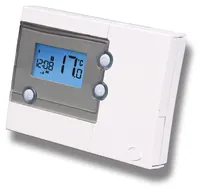
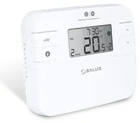
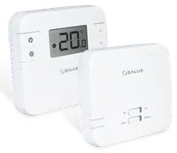
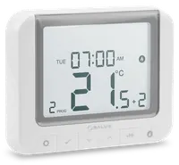
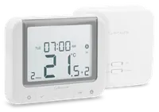
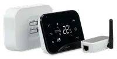
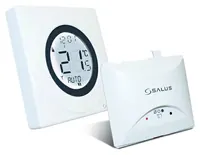

 |
View Salus RT500 user manualSalus RT500 user manual PDF |
View Salus RT500 installation manualSalus RT500 installation manual PDF |
Salus RT500 |
5/2 or 7-day programmable thermostat |
|
|
 |
View Salus RT510 user manualSalus RT510 user manual PDF |
View Salus RT510 installation manualSalus RT510 installation manual PDF |
Salus RT510 |
5/2 or 24h programmable thermostat |
|
|
 |
View Salus RT310RF user manualSalus RT310RF user manual PDF |
View Salus RT310RF installation manualSalus RT310RF installation manual PDF |
Salus RT310RF |
Wireless stat + RXRT510 receiver |
|
|
 |
View Salus RT520 user manualSalus RT520 user manual PDF |
View Salus RT520 installation manualSalus RT520 installation manual PDF |
Salus RT520 |
Boiler Plus wired thermostat |
|
|
 |
View Salus RT520RF user manualSalus RT520RF user manual PDF |
View Salus RT520RF installation manualSalus RT520RF installation manual PDF |
Salus RT520RF |
Boiler Plus wireless kit |
|
|
 |
View Salus iT500 user manualSalus iT500 user manual PDF |
View Salus iT500 installation manualSalus iT500 installation manual PDF |
Salus iT500 |
Internet-connected thermostat kit |
|
|
 |
View Salus ST620WBC user manualSalus ST620WBC user manual PDF |
View Salus ST620WBC installation manualSalus ST620WBC installation manual PDF |
Salus ST620WBC |
S-series programmable stat + RF module |
|
|